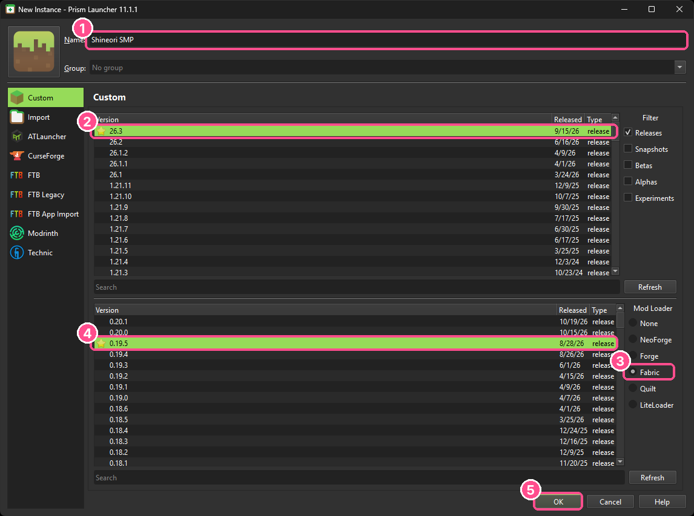
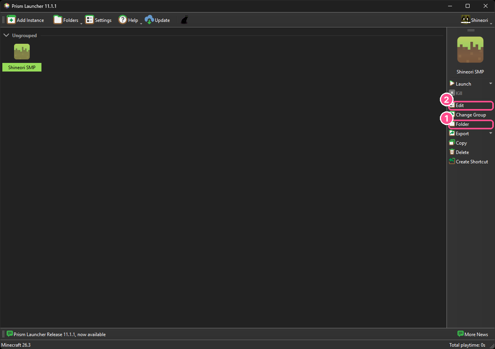
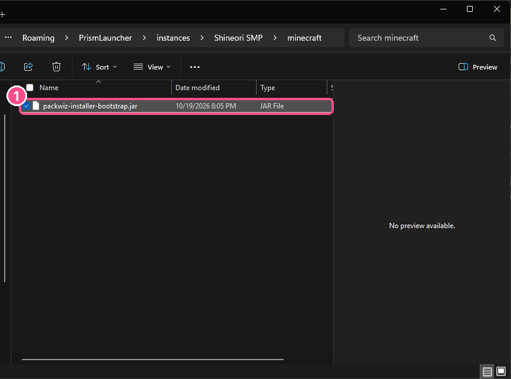
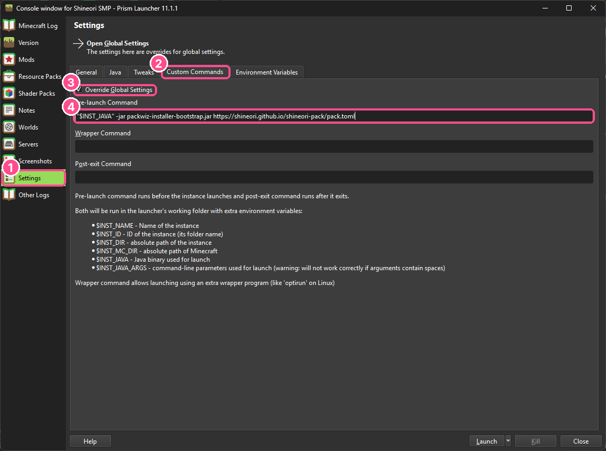
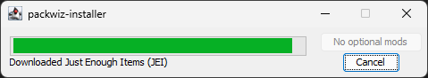
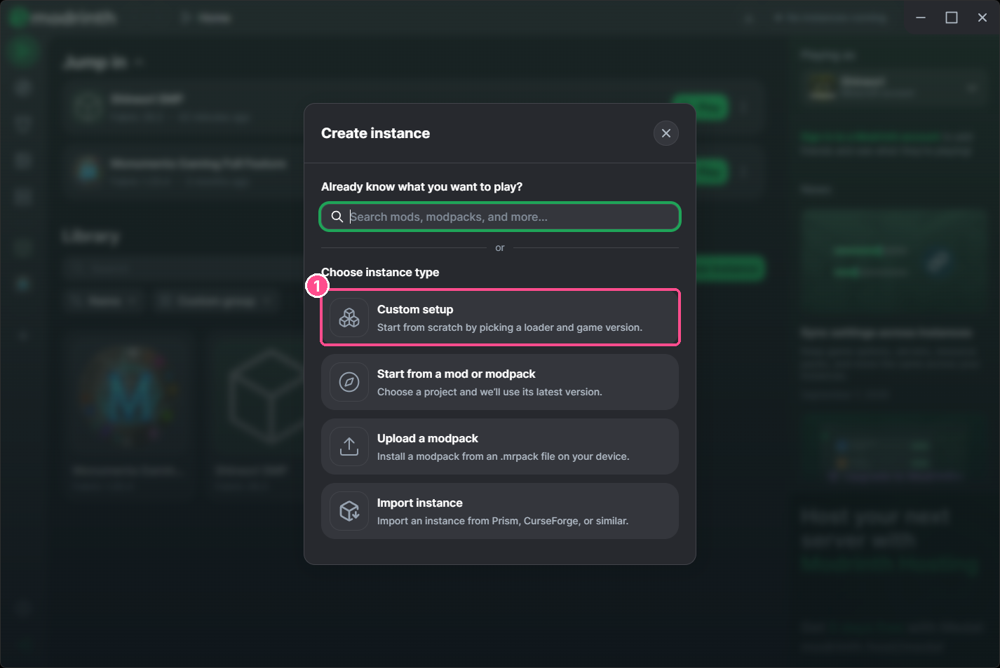
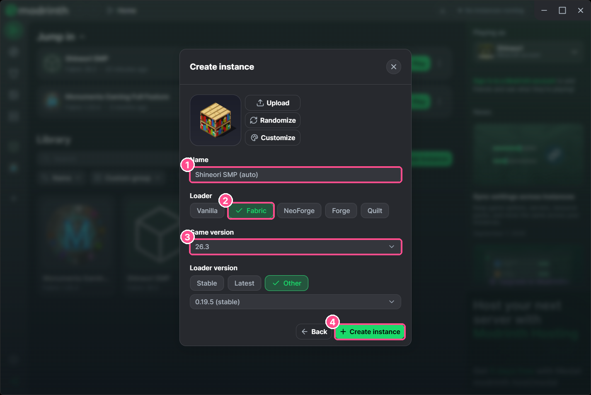
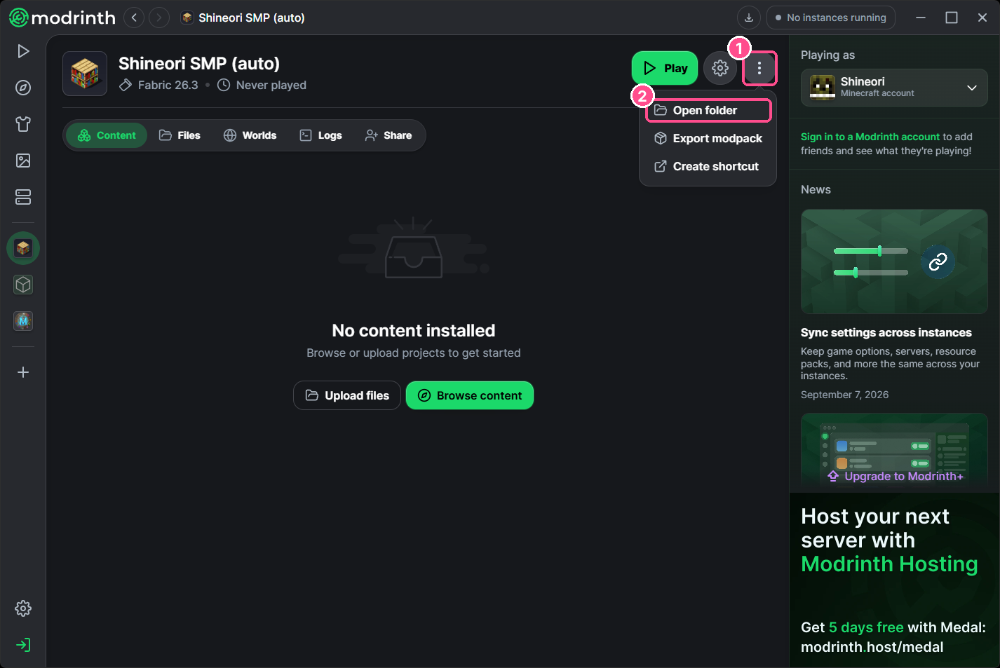
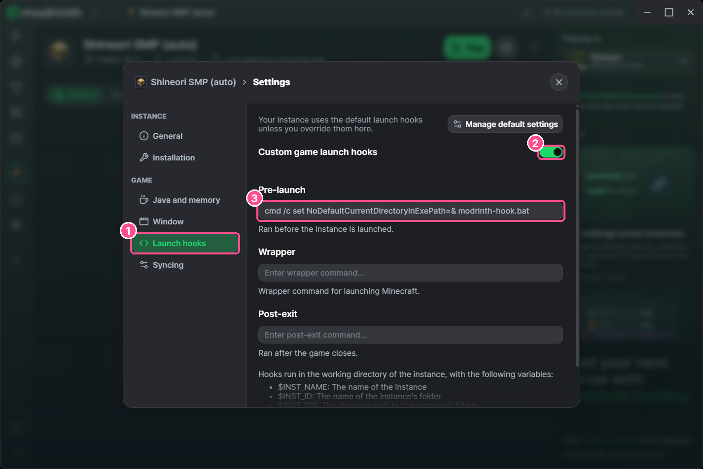

Set this up once and your mods update themselves. Whenever Hasaam adds or removes a mod, you get it automatically next time you play. No more redownloading zips from Discord.
Click Add Instance. Name it anything, pick 26.3, choose Fabric as the mod loader and leave it on 0.19.5. Hit OK.

Download the updater, then click your instance and hit Folder (①). Put the jar inside the minecraft folder (make it if it's not there yet).
⬇ packwiz-installer-bootstrap.jar

Back in Prism, hit Edit (② above), then Settings › Custom Commands. Tick Override Global Settings and paste this into Pre-launch Command:
"$INST_JAVA" -jar packwiz-installer-bootstrap.jar https://shineori.github.io/shineori-pack/pack.toml
A little window flashes up and grabs the mods, then the game starts. It does this check every launch, so you're always up to date. Join play.shineori.me (it's already in your server list).

In your Library, click + New instance, then Custom setup.

Name it anything, pick Fabric, game version 26.3, leave loader version on Stable, and hit Create instance.

Download the kit. On the instance page, click ⋮ › Open folder, and unzip the kit right there (next to mods, config, etc).

Click the ⚙ gear › Launch hooks, turn on Custom game launch hooks, and paste this into Pre-launch exactly (the weird part is needed, Modrinth is picky):
cmd /c set NoDefaultCurrentDirectoryInExePath=& modrinth-hook.bat
The updater window pops up, grabs everything, and the game launches. Every Play checks for updates. No Java install needed, it uses Modrinth's.
CurseForge: Minecraft › Create Custom Profile › version 26.3, loader Fabric.
Vanilla launcher: run the Fabric installer for 26.3 and pick that profile.
CurseForge: profile ⋯ › Open Folder. Vanilla: your .minecraft folder (or the Fabric profile's game directory). Unzip the kit there so it sits next to mods:
Illustration, your folder will have a few more things in it.
Run update-shineori.bat whenever you're about to play (or when Hasaam says "new mod!"). It finds your launcher's Java on its own, syncs, then closes.
Syncing Shineori SMP mods...
(1/26) Downloaded Fabric API
(2/26) Downloaded Sodium
...
(26/26) Downloaded Fabric Language Kotlin
Finished successfully!
All synced! Go play :)If it says it can't find Java, launch Minecraft once from your launcher, or install Java 21+ from adoptium.net.
From now on, mods just show up. If something breaks, screenshot it and send it to Hasaam.
It only manages files that are part of the pack. If you remove a pack mod by hand, it comes back next sync. Mods you added yourself aren't touched.
No. The server list and Map Link config are only written the first time, after that your changes are kept.
Yep, ask Hasaam for the latest .mrpack or CurseForge .zip. You just won't get auto-updates.